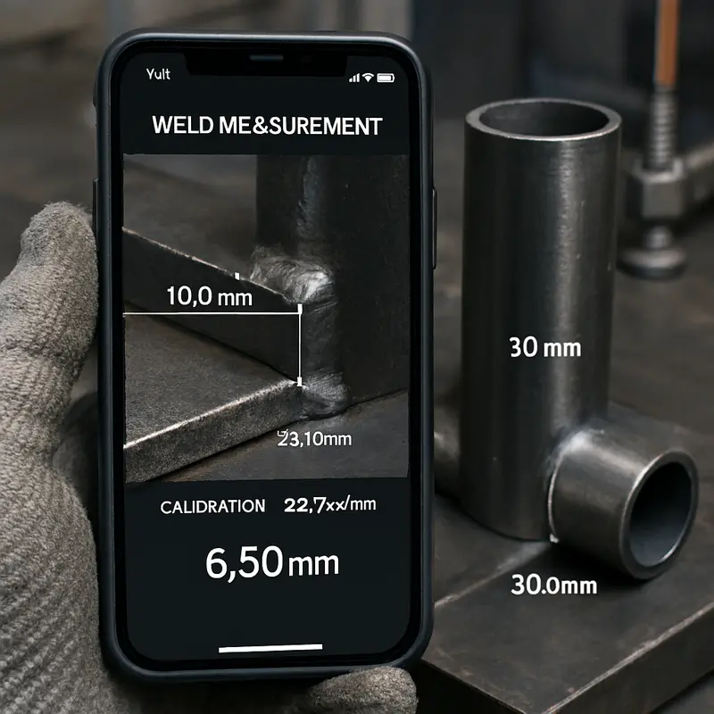

Fotografieren. Kalibrieren. Messen. Nach EN ISO 5817 bewerten.
WeldGauge macht Ihr iPhone zu einer tragbaren Schweißnahtprüfstation. Nutzen Sie die bekannte Blechdicke oder den Rohrdurchmesser als Kalibrierreferenz — kein zusätzliches Werkzeug nötig. Messen Sie Nahtüberhöhung, Einbrand, Versatz, Flankenhöhe und mehr, und bewerten Sie sofort nach den Qualitätsstufen B, C und D der EN ISO 5817.


Hauptfunktionen
Alles, was ein Schweißprüfer für die Qualitätsbewertung vor Ort braucht — von der Fotoaufnahme bis zum normbasierten Gut/Schlecht-Ergebnis.
📷 Kamera & Fotoimport
Schweißfotos mit bis zu 20-fachem Zoom für Nahaufnahmen aufnehmen. Vorhandene Bilder aus der Fotomediathek importieren. Hintergrundentfernung isoliert das Nahtprofil für sauberere Messungen.
📐 Intelligente Kalibrierung
Kalibrieren Sie mit jeder bekannten Abmessung im Foto — Blechdicke an der Fugenkante, Rohraußendurchmesser oder ein Lineal. Die App berechnet ein präzises Pixel-zu-mm-Verhältnis. Keine Zusatzausrüstung nötig.
📏 EN ISO 5817 Bewertung
Unregelmäßigkeitstyp wählen (502, 504, 507, 508, 5011, 5213, 512), Wanddicke eingeben und sofort Gut/Schlecht für die Qualitätsstufen B, C und D erhalten. Inklusive illustriertem Referenzhandbuch.
📋 Projektverwaltung
Prüfungen nach Projekten organisieren — mit Nahtnummer, Ort und Schweißer-ID. Mehrere Messungen pro Projekt. Alle Daten bleiben lokal — nichts verlässt Ihr Gerät.
🛠 Rohrfitting-Bibliothek
Durchsuchbare Datenbank Standard-Rohrfitting — Bögen, T-Stücke, Reduzierungen, Kappen — mit Abmessungen und Spezifikationen als schnelle Vor-Ort-Referenz.
🔒 Komplett offline & privat
Jede Funktion funktioniert ohne Internet. Null Datenerhebung, keine Konten, keine Analytics. Ideal für Vor-Ort-Prüfungen an abgelegenen Orten ohne Netzabdeckung.
In Aktion sehen
Vier echte Prüfworkflows zeigen die Kernfähigkeiten von WeldGauge.
Stumpfnaht — Kalibrierung mit Blechdicke
Mit der bekannten, an der Fugenkante sichtbaren Blechdicke kalibrieren, dann eine Pore als Unregelmäßigkeit messen.
Nahtlänge — Kalibrierung mit rundem Loch
Ein Loch mit bekanntem Durchmesser als Kalibrierreferenz nutzen, um die Schweißnahtlänge präzise zu messen.
T-Stöße-Makro — EN 5817 Bewertung
Eine T-Stoß-Makroprobe mit dem integrierten illustrierten EN ISO 5817 Referenzhandbuch messen.
Werkzeuge — Rohrfitting-Bibliothek
Die durchsuchbare Rohrfitting-Datenbank für schnelle Abmessungsreferenz bei Vor-Ort-Prüfungen durchstöbern.
So funktioniert es
Vier Schritte vom Foto zur Gut/Schlecht-Bewertung — keine Desktop-Software nötig.
1. Aufnehmen
Schweißnaht mit der integrierten Kamera fotografieren (bis 20× Zoom) oder ein vorhandenes Foto importieren. Die Kalibrierreferenz — Blechkante, Rohroberfläche oder Lineal — muss sichtbar im Bild sein.
2. Kalibrieren
Eine Linie über eine bekannte Abmessung im Foto ziehen: die Blechdicke an der Fugenkante, den Rohraußendurchmesser oder ein Lineal. Den realen Wert eingeben, und die App stellt das Pixel-zu-mm-Verhältnis fest.
3. Messen
Zum Messen jeder Nahtabmessung tippen — Nahtüberhöhung, Einbrandtiefe, Schenkelmaß, Flankendicke, Versatz. Beim Messen frei schwenken, zoomen und drehen.
4. Bewerten
Unregelmäßigkeitstyp wählen und Wanddicke eingeben. Die App vergleicht Ihre Messung mit den Grenzwerten der EN ISO 5817 und zeigt die erreichte Qualitätsstufe — B, C, D oder nicht konform.
Praxisanwendungen
WeldGauge ist für die Umgebungen gemacht, in denen Schweißprüfer tatsächlich arbeiten.
Prüfung von Rohrleitungs-Stumpfnähten
Umfangsnähte an Rohrverbindungen fotografieren. Bekannten Rohrdurchmesser oder Wanddicke zur Kalibrierung nutzen. Nahtüberhöhung und Versatz messen, dann nach EN ISO 5817 bewerten.

Kehlnaht — Kalibrierung mit Blechdicke
Kein Lineal? Kein Problem. Die sichtbare Blechdicke an der Querschnittskante dient als Kalibrierreferenz. Flankendicke und Schenkelmaße direkt auf dem Foto messen.

Einbrand- & Defektbewertung
Einbrandtiefe, übermäßiges Schweißgut oder jede andere Unregelmäßigkeit messen. Die App bewertet sofort nach allen drei Qualitätsstufen der EN ISO 5817 mit klaren Gut/Schlecht-Ergebnissen.
Vor-Ort-Prüfung — komplexe Rohrsysteme
Schweißnähte an T-Stücken, Bögen, Reduzierungen und Flanschverbindungen prüfen. Funktioniert komplett offline — ideal für abgelegene Pipeline-Standorte ohne Internet.

Dokumentation & Berichte
Messergebnisse und kommentierte Fotos für Prüfprotokolle exportieren. Alle Projektdaten nach Nahtnummer, Ort und Schweißer geordnet — bereit für die QA-Dokumentation.
Häufig gestellte Fragen
Braucht die App eine Internetverbindung?
Nein. Alle Funktionen — Kamera, Kalibrierung, Messung und EN ISO 5817 Bewertung — funktionieren vollständig offline. Es werden nie Daten übertragen.
Was kann ich als Kalibrierreferenz verwenden?
Alles mit bekannter Abmessung, das im Foto sichtbar ist: die Blechdicke an der Fugenkante, der Rohraußendurchmesser, ein Lineal, ein Lehrenstein oder sogar eine Münze. Die App wandelt Pixelabstände basierend auf Ihrer Referenz in reale Millimeter um.
Welche Normen werden unterstützt?
WeldGauge bewertet Nahtunregelmäßigkeiten nach EN ISO 5817 mit den Qualitätsstufen B (streng), C (mittel) und D (moderat). Sieben Unregelmäßigkeitstypen werden mit illustrierten Referenzhandbüchern unterstützt.
Wie genau ist die Messung?
Die Genauigkeit hängt von Ihrer Kalibrierreferenz und Bildqualität ab. Mit einer klar sichtbaren Referenzabmessung und einem scharfen Foto ist Unterschneidung auf Zehntelmillimeter erreichbar.
Sammelt die App irgendwelche Daten?
Nein. Null Datenerhebung — keine Analytics, kein Tracking, keine Konten. Alle Fotos und Messungen bleiben auf Ihrem Gerät. Siehe unsere Datenschutzrichtlinie.
Funktioniert sie auf dem iPad?
Ja. WeldGauge ist eine universelle App, optimiert für iPhone und iPad.
Für wen ist WeldGauge?
Schweißprüfer (CWI, CSWIP, IWI), Qualitätsingenieure, Fertigungsleiter und Schweißauszubildende — alle, die vor Ort eine schnelle, normbasierte Nahtbewertung brauchen.
Wie erreiche ich den Support?
Schreiben Sie an wangning.engineer@outlook.com. Übliche Antwortzeit: 24–48 Stunden.
App holen
WeldGauge ist im App Store für iPhone und iPad erhältlich.